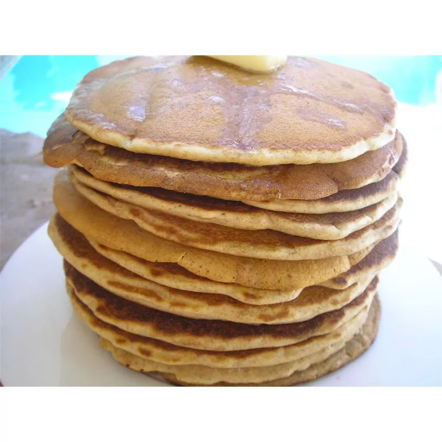

Description
This is a bulk whole wheat pancake mix recipe that my family loves, and it is very easy to make! It also makes good waffles.
Ingredients
- 5 cups whole wheat flour
- 3 cups unbleached all-purpose flour
- 1/2 cup white sugar
- 2 1/2 tablespoons baking powder
- 4 teaspoons baking soda
- 4 teaspoons salt
Steps
- Whisk whole wheat flour, all-purpose flour, sugar, baking powder, baking soda, and salt together in a bowl
- Store in an airtight container
- Mix 1 cup of pancake mix, 1 cup of milk, 1 egg, and 2 tablespoons of oil together in a large bowl
- Cook pancakes on a hot griddle and serve with your choice of toppings.